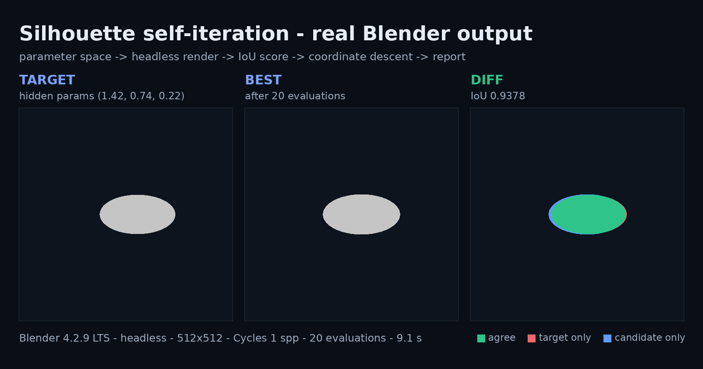

AI Skill + MCP toolkit for agent-driven headless Blender modelling — 把「用 Blender 反复调模型」变成可复现的工程流程：参数空间 → 无头渲染 → 量化打分 → 搜索 → 报告。
下面全部由 blender-automation-skill demo 在本机用 Blender 4.2.9 LTS 现场渲染，仓库里不存任何预置渲染。

(1.42, 0.74, 0.22) 只用于渲染参考图，
搜索从 (1.0, 1.0, 0.0) 出发，20 次评估收敛到 (1.45, 0.76, 0.19)，
掩膜 IoU 0.9378（512²、Cycles 1 spp、全程 9.1 s）。单帧原图：目标剪影 512² ·
最佳渲染 512² ·
报告：out/demo/report.html（迭代曲线 + 每次评估的表格 + 目标/最佳对比，单文件、无外链）。
blender-automation-skill-mcp 走 stdio 讲 MCP，工具只返回 JSON，缺 Blender 或参数非法时返回 {"ok": false, "error": ...} 而不是抛异常。
每个客户端的填法、参数表与报错解读见 docs/mcp.md。
pip install "blender-automation-skill[mcp]"
# Claude Code
claude mcp add blender -- blender-automation-skill-mcp
# Codex
codex mcp add blender -- blender-automation-skill-mcp
# 任意 MCP 客户端（Cursor / DSH / 自研 agent）
{
"mcpServers": {
"blender": { "command": "blender-automation-skill-mcp", "args": [] }
}
}| 工具 | 作用 |
|---|---|
blender_capabilities | 探测 Blender 路径/版本、本机 CPU 与内存 |
blender_bench | 冷启动、渲染、布尔耗时与峰值 RSS |
blender_run_script | 用一个 JSON 参数跑一次 Blender 脚本，回传产物 |
blender_optimize | 对目标剪影做坐标下降搜索（最大化掩膜 IoU） |
blender_demo | 内置剪影自迭代示例，零资产即可跑通 |
blender_report | history.json → 单文件 HTML 报告 |
blender_run_script / blender_optimize 统一按这个形式调用 Blender：
blender --background --python <script> -- \
<params-json> <png-out> [resolution]脚本自己读 sys.argv 中 -- 之后的部分、渲染一张剪影、退出码 0。
完整可运行示例见 demo.py。
分别解决不可复现、机器不可控、评估靠眼睛。
每一轮只做一件事：给一组参数打分，并把证据留下来。
没有 Blender 也能跑测试；跑 demo/bench 才需要真实二进制。model-loop 命令仍是可用别名。
python -m pip install -e ".[dev]"
pytest -q
# 机器基准
blender-automation-skill bench --blender /path/to/blender \
--out out/bench
# 完整自迭代示例（无需模型资产）
blender-automation-skill demo --blender /path/to/blender \
--out out/demo
open out/demo/report.html隐藏参数 (1.42, 0.74, 0.22)，从 (1.0, 1.0, 0.0) 出发，
20 次评估收敛到 (1.45, 0.76, 0.19)，剪影 IoU
0.9378。
报告含迭代曲线、每次评估的表格、目标/最佳渲染对比；默认输出到 out/demo/report.html。
headless Ubuntu · 16 核 CPU · 无独显 · Blender 4.2.9 LTS
| 项目 | 耗时 |
|---|---|
| 冷启动（无场景） | 0.23 s |
| 渲染 1024² / 1 spp | 0.03 s |
| 渲染 1024² / 16 spp | 0.26 s |
| 渲染 1024² / 64 spp | 0.98 s |
| EXACT 布尔（29k 顶点） | 0.23 s |
子进程峰值 RSS。上限默认 8 GiB，用 RLIMIT_AS 在分配阶段失败，
而不是等内核 OOM 把同机器的服务一起带走。
代码是 MIT，模型资产不进仓库，Blender 只作为外部工具调用。
src/model_loop/
params.py 参数空间：边界、采样、量化、内容哈希
search.py 坐标下降 / 随机搜索（预算可中断）
metrics.py 掩膜 IoU / RMSE / 质心 / 包围盒
blender.py 受控子进程：RLIMIT_AS、flock、超时
pipeline.py Loop：缓存、预算、历史、序列化
report.py 单文件 HTML（内联 SVG + base64 图片）
demo.py 剪影自迭代示例（真实 Blender 渲染）
bench.py 机器基准
cli.py 命令行入口
mcp_server.py MCP server（stdio，6 个工具）
tests/ 69 个单测（不需要 Blender）
SKILL.md agent skill 说明（Claude Code / Codex / DSH 通用）
examples/ mcp.json + mcp-clients/（各 agent 客户端配置样例）+ 自定义评估器
docs/ 指南（含 MCP 接入）+ 本页 + assets/ 真实渲染截图